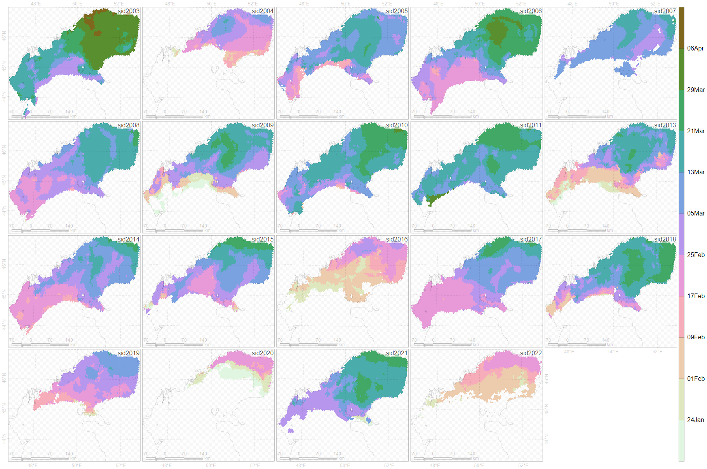
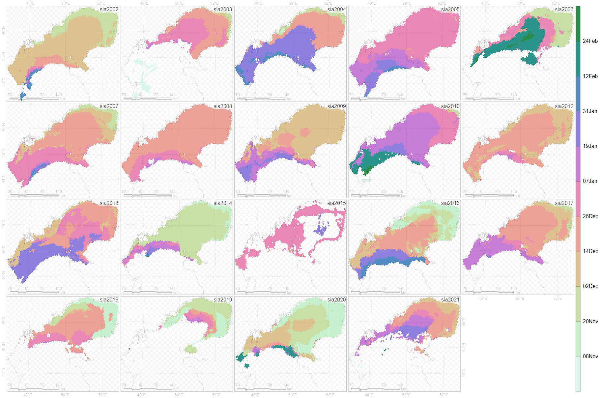
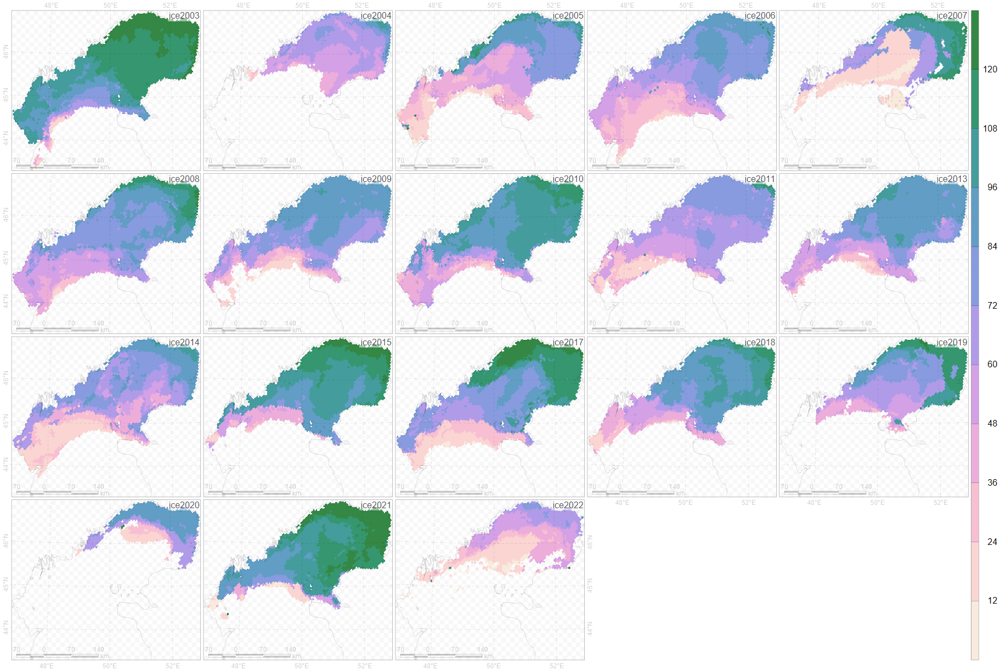
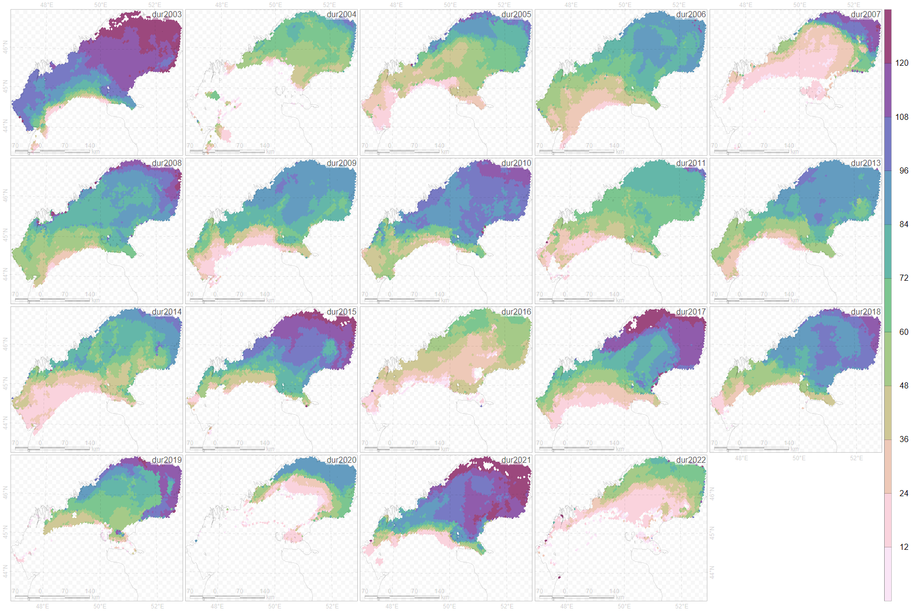
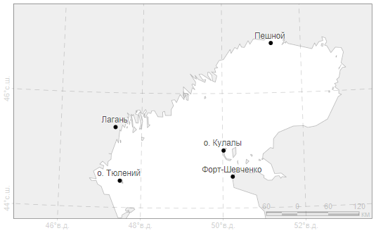

layout: true .toc.banner[ .logo.remarkonly[ <img src="https://sev-in.ru/sites/default/files/Логотип_1.ico" width="71" /> ] .shorttitle[ ] ] --- name: home class: metadata customtitle middle left giphy .toc.sidebar.left-column[ .outline[ # [Ледовые фенокарты ](#H2c9e8) # [Данные ](#H53cb1) # [Методы ](#Hf1b8c) # [Результаты](#H75252) # [Факторы окружающей среды ](#H903ca) ] ] .toc.mainbar.right-column[ .author[Платонов Н. Г.] .institute[ИПЭЭ РАН, г. Москва] .title[Ледовая фенология Каспийского моря] .subtitle[] .what[Международная научная конференция «**Каспийский тюлень: индикатор состояния каспийской экосистемы**»] .where[Прикаспийский институт биологических ресурсов ДФИЦ РАН, г. Махачкала] .when[12-14 ноября 2024 г. .updated[Обновлено: 2024-08-13 17:50]] ] --- class: notable .onlyremark[ ## Аннотация По набору данных "Daily Lake Ice Phenology Time Series Derived from AMSR-E and AMSR2" Национального центра данных по льду и снегу (США) построены многолетние карты сроков появления и исчезновения льда Каспийского моря. ] --- name: H2c9e8 .toc.sidebar.left-column[ .outline[ # [Ледовые фенокарты ](#H2c9e8).fg[] ## [Фенологические характеристики ](#H2c9e8).fg[].bg[] ## [Особенности фенокарт ](#Hcb56b) # [Данные ](#H53cb1) # [Методы ](#Hf1b8c) # [Результаты](#H75252) # [Факторы окружающей среды ](#H903ca) ] ] .toc.mainbar.right-column[ .header.broad[ Фенологические характеристики ] .clarify[ Сроки появление льда: + Образование льда + Импорт ледяных полей ] .clarify[ Сроки исчезновение льда: + Таяние льда + Экспорт ледяных полей ] ] --- name: Hcb56b .toc.sidebar.left-column[ .outline[ # [Ледовые фенокарты ](#H2c9e8).fg[] ## [Фенологические характеристики ](#H2c9e8) ## [Особенности фенокарт ](#Hcb56b) <span class="bullet bullet-active">[•](#Hcb56b)</span><span class="bullet mslide7m">[•](#H427c6)</span><span class="bullet mslide8m">[•](#nominal)</span>.fg[].bg[] # [Данные ](#H53cb1) # [Методы ](#Hf1b8c) # [Результаты](#H75252) # [Факторы окружающей среды ](#H903ca) ] ] .toc.mainbar.right-column[ .header.broad[ Особенности фенокарт ] .clarify[ *Pros*: + Ежедневные ледовые карты на протяжении нескольких месяцев отображаются на одной карте + Карта оценки продолжительности ледового сезона ] .clarify[ *Cons*: + Сплоченность льда или категории ледового покрова исходных данных теряются. + Единицы измерения на фенокартах – дни. Неоднозначность использования в математических моделях. ] ] --- name: H427c6 .toc.sidebar.left-column[ .outline[ # [Ледовые фенокарты ](#H2c9e8).fg[] ## [Фенологические характеристики ](#H2c9e8) ## [Особенности фенокарт ](#Hcb56b) <span class="bullet bullet">[•](#Hcb56b)</span><span class="bullet bullet-active">[•](#H427c6)</span><span class="bullet mslide8m">[•](#nominal)</span>.fg[].bg[] # [Данные ](#H53cb1) # [Методы ](#Hf1b8c) # [Результаты](#H75252) # [Факторы окружающей среды ](#H903ca) ] ] .toc.mainbar.right-column[ .header.broad[ Особенности фенокарт ] <img src="assets/animated-sia2020.gif" width="1330" height="650" expand style="display: block; margin: auto auto auto 0;" /> ] --- name: nominal .toc.sidebar.left-column[ .outline[ # [Ледовые фенокарты ](#H2c9e8).fg[] ## [Фенологические характеристики ](#H2c9e8) ## [Особенности фенокарт ](#Hcb56b) <span class="bullet bullet">[•](#Hcb56b)</span><span class="bullet bullet">[•](#H427c6)</span><span class="bullet bullet-active">[•](#nominal)</span>.fg[].bg[] # [Данные ](#H53cb1) # [Методы ](#Hf1b8c) # [Результаты](#H75252) # [Факторы окружающей среды ](#H903ca) ] ] .toc.mainbar.right-column[ .header.broad[ Особенности фенокарт ] <div class="figure" style="text-align: left"> <img src="assets/category-sia2020.png" alt="Номинальная шкала (категории льда)" width="1330" height="650" autoheight /> <p class="caption">Номинальная шкала (категории льда)</p> </div> См. [интервальную шкалу](#interval) (сплоченность льда). ] --- name: H53cb1 .toc.sidebar.left-column[ .outline[ # [Ледовые фенокарты ](#H2c9e8) # [Данные ](#H53cb1).fg[] ## [Источник ](#H53cb1).fg[].bg[] ## [Обработка ](#H2d236) # [Методы ](#Hf1b8c) # [Результаты](#H75252) # [Факторы окружающей среды ](#H903ca) ] ] .toc.mainbar.right-column[ .header.broad[ Источник ] Временной ряд ежедневных явлений ледового покрова озер на основе AMSR-E и AMSR2 данных <span class="cite hovertext" data-hover="Daily Lake Ice Phenology Time Series Derived from AMSR-E and AMSR2"><a name=cite-lakeice0726></a>([Du et al., 2017](#bib))</span>. ] --- name: H2d236 .toc.sidebar.left-column[ .outline[ # [Ледовые фенокарты ](#H2c9e8) # [Данные ](#H53cb1).fg[] ## [Источник ](#H53cb1) ## [Обработка ](#H2d236) <span class="bullet bullet-active">[•](#H2d236)</span><span class="bullet mslide12m">[•](#interval)</span>.fg[].bg[] # [Методы ](#Hf1b8c) # [Результаты](#H75252) # [Факторы окружающей среды ](#H903ca) ] ] .toc.mainbar.right-column[ .header.broad[ Обработка ] + Заполнение пропусков в данных + Пространственная экстраполяция<sup><a href=#fn><span class="hovertext" data-hover="В данной работе – не кригинг">1<span></a></sup><span id=ref1> + Временна́я экстраполяция + Преобразование из номинальной шкалы (категории льда) в интервальную (сплоченность льда) + Выделение района исследований (постобработка) ] --- name: interval .toc.sidebar.left-column[ .outline[ # [Ледовые фенокарты ](#H2c9e8) # [Данные ](#H53cb1).fg[] ## [Источник ](#H53cb1) ## [Обработка ](#H2d236) <span class="bullet bullet">[•](#H2d236)</span><span class="bullet bullet-active">[•](#interval)</span>.fg[].bg[] # [Методы ](#Hf1b8c) # [Результаты](#H75252) # [Факторы окружающей среды ](#H903ca) ] ] .toc.mainbar.right-column[ .header.broad[ Обработка ] <div class="figure" style="text-align: left"> <img src="assets/iceconc-sia2020.png" alt="Интервальная шкала (сплоченность льда)" width="1330" height="650" autoheight /> <p class="caption">Интервальная шкала (сплоченность льда)</p> </div> См. [номинальную шкалу](#nominal) (категории льда). ] --- name: Hf1b8c .toc.sidebar.left-column[ .outline[ # [Ледовые фенокарты ](#H2c9e8) # [Данные ](#H53cb1) # [Методы ](#Hf1b8c) <span class="bullet bullet-active">[•](#Hf1b8c)</span><span class="bullet mslide14m">[•](#Hceeeb)</span><span class="bullet mslide15m">[•](#Hb9e98)</span>.fg[].bg[] # [Результаты](#H75252) # [Факторы окружающей среды ](#H903ca) ] ] .toc.mainbar.right-column[ .header.broad[ Методы ] Применение унимодальной изотонической регрессии <span class="cite hovertext" data-hover="Locating a maximum using isotonic regression"><a name=cite-Turner1997></a>([Turner and Wollan, 1997](#bib))</span> для аппроксимации временно́го ряда сплоченности морского льда. Предшественник: + Аппроксимация асимптотическими функциями Гомперца и несимметричной Гаусса <span class="cite hovertext" data-hover="Перемещение самки белого медведя в Карском море в период летнего таяния льда"><a name=cite-Rozhnov2017_hutuda_ru></a>([Рожнов и др., 2017](#bib))</span>. ] --- name: Hceeeb .toc.sidebar.left-column[ .outline[ # [Ледовые фенокарты ](#H2c9e8) # [Данные ](#H53cb1) # [Методы ](#Hf1b8c) <span class="bullet bullet">[•](#Hf1b8c)</span><span class="bullet bullet-active">[•](#Hceeeb)</span><span class="bullet mslide15m">[•](#Hb9e98)</span>.fg[].bg[] # [Результаты](#H75252) # [Факторы окружающей среды ](#H903ca) ] ] .toc.mainbar.right-column[ .header.broad[ Методы ] + Мода – район краткосрочного присутствия льда (обычно для Каспийского моря) + Неубывающая функция – период образования льда + Невозрастающая функция – период исчезновения льда + Инвертированная мода – район краткосрочного периода открытой воды (не для Каспийского моря) ] --- name: Hb9e98 .toc.sidebar.left-column[ .outline[ # [Ледовые фенокарты ](#H2c9e8) # [Данные ](#H53cb1) # [Методы ](#Hf1b8c) <span class="bullet bullet">[•](#Hf1b8c)</span><span class="bullet bullet">[•](#Hceeeb)</span><span class="bullet bullet-active">[•](#Hb9e98)</span>.fg[].bg[] # [Результаты](#H75252) # [Факторы окружающей среды ](#H903ca) ] ] .toc.mainbar.right-column[ .header.broad[ Методы ] Оценка сроков: + Абсцисса пересечения линии изотонической регрессии с линией сплоченности 15% Оценка качества: + Сумма квадратов отклонений (как в линейной регрессии) ] --- name: H75252 .toc.sidebar.left-column[ .outline[ # [Ледовые фенокарты ](#H2c9e8) # [Данные ](#H53cb1) # [Методы ](#Hf1b8c) # [Результаты](#H75252).fg[] ## [Исчезновение льда ](#H75252).fg[].bg[] ## [Появление льда ](#H13e48) ## [Ледовый период ](#ice) # [Факторы окружающей среды ](#H903ca) ] ] .toc.mainbar.right-column[ .header.broad[ Исчезновение льда ]  ] --- name: H13e48 .toc.sidebar.left-column[ .outline[ # [Ледовые фенокарты ](#H2c9e8) # [Данные ](#H53cb1) # [Методы ](#Hf1b8c) # [Результаты](#H75252).fg[] ## [Исчезновение льда ](#H75252) ## [Появление льда ](#H13e48).fg[].bg[] ## [Ледовый период ](#ice) # [Факторы окружающей среды ](#H903ca) ] ] .toc.mainbar.right-column[ .header.broad[ Появление льда ]  ] --- name: ice .toc.sidebar.left-column[ .outline[ # [Ледовые фенокарты ](#H2c9e8) # [Данные ](#H53cb1) # [Методы ](#Hf1b8c) # [Результаты](#H75252).fg[] ## [Исчезновение льда ](#H75252) ## [Появление льда ](#H13e48) ## [Ледовый период ](#ice) <span class="bullet bullet-active">[•](#ice)</span><span class="bullet mslide21m">[•](#dur)</span><span class="bullet mslide22m">[•](#H0ca04)</span>.fg[].bg[] # [Факторы окружающей среды ](#H903ca) ] ] .toc.mainbar.right-column[ .header.broad[ Ледовый период ] <div class="figure" style="text-align: left">  <p class="caption">По фенокартам появления и исчезновения льда</p> </div> Ср. [по временно́му ряду сплоченности](#dur) ] --- name: dur .toc.sidebar.left-column[ .outline[ # [Ледовые фенокарты ](#H2c9e8) # [Данные ](#H53cb1) # [Методы ](#Hf1b8c) # [Результаты](#H75252).fg[] ## [Исчезновение льда ](#H75252) ## [Появление льда ](#H13e48) ## [Ледовый период ](#ice) <span class="bullet bullet">[•](#ice)</span><span class="bullet bullet-active">[•](#dur)</span><span class="bullet mslide22m">[•](#H0ca04)</span>.fg[].bg[] # [Факторы окружающей среды ](#H903ca) ] ] .toc.mainbar.right-column[ .header.broad[ Ледовый период ] <div class="figure" style="text-align: left">  <p class="caption">По временно́му ряду сплоченности</p> </div> Ср. [c разностью сроков исчезновения и появления льда](#ice) ] --- name: H0ca04 .toc.sidebar.left-column[ .outline[ # [Ледовые фенокарты ](#H2c9e8) # [Данные ](#H53cb1) # [Методы ](#Hf1b8c) # [Результаты](#H75252).fg[] ## [Исчезновение льда ](#H75252) ## [Появление льда ](#H13e48) ## [Ледовый период ](#ice) <span class="bullet bullet">[•](#ice)</span><span class="bullet bullet">[•](#dur)</span><span class="bullet bullet-active">[•](#H0ca04)</span>.fg[].bg[] # [Факторы окружающей среды ](#H903ca) ] ] .toc.mainbar.right-column[ .header.broad[ Ледовый период ] <div class="figure" style="text-align: left"> <img src="assets/season_dif.png" alt="Разность продолжительности ледового периода" width="1330" height="600" autoheight /> <p class="caption">Разность продолжительности ледового периода</p> </div> ] --- name: H903ca .toc.sidebar.left-column[ .outline[ # [Ледовые фенокарты ](#H2c9e8) # [Данные ](#H53cb1) # [Методы ](#Hf1b8c) # [Результаты](#H75252) # [Факторы окружающей среды ](#H903ca) <span class="bullet bullet-active">[•](#H903ca)</span><span class="bullet mslide24m">[•](#He5c3e)</span>.fg[].bg[] ] ] .toc.mainbar.right-column[ .header.broad[ Факторы окружающей среды ] Анализ данных с метеостанций  ] --- name: He5c3e .toc.sidebar.left-column[ .outline[ # [Ледовые фенокарты ](#H2c9e8) # [Данные ](#H53cb1) # [Методы ](#Hf1b8c) # [Результаты](#H75252) # [Факторы окружающей среды ](#H903ca) <span class="bullet bullet">[•](#H903ca)</span><span class="bullet bullet-active">[•](#He5c3e)</span>.fg[].bg[] ] ] .toc.mainbar.right-column[ .header.broad[ Факторы окружающей среды ] Возможные причины: + Аномалия температуры воздуха в период образования льда + Аномалия скорости и направления ветра Не обнаружено. Что можно посмотреть (не метеостанции, а уже пространственное распределение): + Температура воды + Солёность воды + Уровень моря ] --- name: H92c4d .toc.sidebar.left-column[ .outline[ # [Ледовые фенокарты ](#H2c9e8) # [Данные ](#H53cb1) # [Методы ](#Hf1b8c) # [Результаты](#H75252) # [Факторы окружающей среды ](#H903ca) ] ] .toc.mainbar.right-column[ .onlyremark[ .center[.huge[.huge[Спасибо за внимание]]] ] .pulling[ .pull-left-40[ ### Благодарности + Вячеслав Рожнов (ИПЭЭ РАН) ] .pull-right-60[ ### О докладчике Платонов Никита Геннадьевич с.н.с. ИПЭЭ РАН, к.т.н. <svg aria-hidden="true" role="img" viewBox="0 0 512 512" style="height:1em;width:1em;vertical-align:-0.125em;margin-left:auto;margin-right:auto;font-size:inherit;fill:currentColor;overflow:visible;position:relative;"><path d="M64 112c-8.8 0-16 7.2-16 16v22.1L220.5 291.7c20.7 17 50.4 17 71.1 0L464 150.1V128c0-8.8-7.2-16-16-16H64zM48 212.2V384c0 8.8 7.2 16 16 16H448c8.8 0 16-7.2 16-16V212.2L322 328.8c-38.4 31.5-93.7 31.5-132 0L48 212.2zM0 128C0 92.7 28.7 64 64 64H448c35.3 0 64 28.7 64 64V384c0 35.3-28.7 64-64 64H64c-35.3 0-64-28.7-64-64V128z"/></svg> [platonov@sevin.ru](mailto:platonov@sevin.ru) <svg aria-hidden="true" role="img" viewBox="0 0 496 512" style="height:1em;width:0.97em;vertical-align:-0.125em;margin-left:auto;margin-right:auto;font-size:inherit;fill:currentColor;overflow:visible;position:relative;"><path d="M248,8C111.033,8,0,119.033,0,256S111.033,504,248,504,496,392.967,496,256,384.967,8,248,8ZM362.952,176.66c-3.732,39.215-19.881,134.378-28.1,178.3-3.476,18.584-10.322,24.816-16.948,25.425-14.4,1.326-25.338-9.517-39.287-18.661-21.827-14.308-34.158-23.215-55.346-37.177-24.485-16.135-8.612-25,5.342-39.5,3.652-3.793,67.107-61.51,68.335-66.746.153-.655.3-3.1-1.154-4.384s-3.59-.849-5.135-.5q-3.283.746-104.608,69.142-14.845,10.194-26.894,9.934c-8.855-.191-25.888-5.006-38.551-9.123-15.531-5.048-27.875-7.717-26.8-16.291q.84-6.7,18.45-13.7,108.446-47.248,144.628-62.3c68.872-28.647,83.183-33.623,92.511-33.789,2.052-.034,6.639.474,9.61,2.885a10.452,10.452,0,0,1,3.53,6.716A43.765,43.765,0,0,1,362.952,176.66Z"/></svg> [@NikitaPlatonov](https://t.me/NikitaPlatonov) Программа изучения белого медведя в российской Арктике Постоянно действующая экспедиция РАН ИПЭЭ РАН - 90 лет ] ] ] --- name: bib layout: false class: notable .footnote.small.bibliography[ <div class="backtoshow"><a href="javascript:window.history.back();">↩</a></div> **** <a name=bib-lakeice0726></a>[Du, J., J. Kimball, and C. Duguay](#bib) (2017). _Daily Lake Ice Phenology Time Series Derived from AMSR-E and AMSR2_. Version 1. DOI: [10.5067/HT4NQO7ZJF7M](https://doi.org/10.5067%2FHT4NQO7ZJF7M). (Visited on Jan. 27, 2024). <a name=bib-Turner1997></a>[Turner, T. and P. Wollan](#bib) (1997). "Locating a maximum using isotonic regression". In: _Computational Statistics & Data Analysis_ 25.3, pp. 305-320. DOI: [10.1016/s0167-9473(97)00009-1](https://doi.org/10.1016%2Fs0167-9473%2897%2900009-1). <a name=bib-Rozhnov2017_hutuda_ru></a>[Рожнов, В., Н. Платонов, С. Найденко, И. Мордвинцев, and Е. Иванов](#bib) (2017). "Перемещение самки белого медведя в Карском море в период летнего таяния льда". In: _Доклады Академии наук_, pp. 359-363. DOI: [10.7868/S0869565217030276](https://doi.org/10.7868%2FS0869565217030276). ] --- layout: false name: fn class: notable hide: true .footnote.small[ **** <div class="backtoshow"><a href="javascript:window.history.back();">↩</a></div>1. В данной работе – не кригинг ]